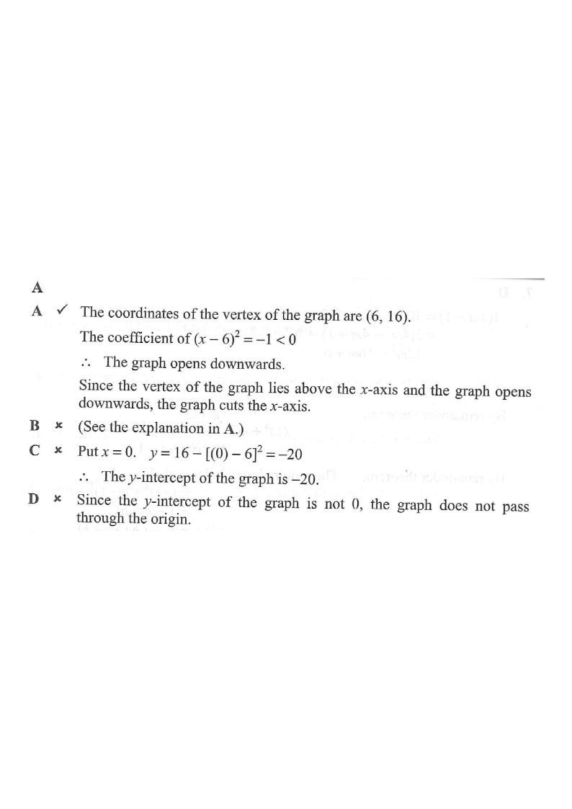

Which of the following statements about the graph of
$$y=16-(x-6)^2$$
is true?
A The graph cuts the x-axis.
B The graph opens upwards.
C The y-intercept of the graph is 16.
D The graph passes through the origin.

Figure (original exam diagram)
Step-by-step solution
1 · Read the vertex form
Vertex Form of a Quadratic Function\(y=a(x-h)^{2}+k\)Comparing \(y=-(x-6)^{2}+16\) with the vertex form gives \(a=-1\) and vertex \((6,16)\).
Compare with the vertex form $y=a(x-h)^2+k$:
$$y=16-(x-6)^2=-1\cdot(x-6)^2+16$$
So $a=-1$, $h=6$, $k=16$.
Hint: the vertex is at $(h,k)=(6,16)$ — already visible in the graph on the left (red point).
2 · Check option B — does it open upwards?
Sign of the Leading Coefficient\(a<0\ \Rightarrow\ \text{the parabola opens downwards}\)The coefficient of \((x-6)^{2}\) is \(-1<0\), so option B (opens upwards) is false.
The coefficient of $(x-6)^2$ is $-1<0$.
$$\therefore\ \text{the graph opens } \textbf{downwards}.$$
B is false.
Hint: a negative leading coefficient always flips the parabola downwards.
3 · Check option A — does it cut the x-axis?
Solving by Taking Square Roots\((x-h)^{2}=c\ \Rightarrow\ x=h\pm\sqrt{c}\)\((x-6)^{2}=16\) gives \(x-6=\pm4\), i.e. the two \(x\)-intercepts \(-2\) and \(10\).
The vertex $(6,16)$ lies above the $x$-axis and the graph opens downwards, so the two arms must cross the $x$-axis.
Direct check: $16-(x-6)^2=0 \Rightarrow (x-6)^2=16 \Rightarrow x-6=\pm 4$
$$\Rightarrow x=-2 \text{ or } x=10$$
A is true.
Hint: two real roots $\Rightarrow$ two $x$-intercepts. Look at the green dots on the canvas.
4 · Check option C — the y-intercept
Put $x=0$:
$$y=16-\big((0)-6\big)^2=16-36=-20$$
So the $y$-intercept is $-20$, not $16$.
C is false.
Hint: don't confuse the $y$-intercept with the $y$-coordinate of the vertex.
5 · Check option D — passes through the origin?
The origin is $(0,0)$. Since the $y$-intercept is $-20\ne 0$, the graph does not pass through the origin.
D is false.
Hint: a curve passes through the origin only if $y=0$ when $x=0$.
6 · Summary table
Option
Statement
Verdict
A
Cuts the $x$-axis
True (roots −2, 10)
B
Opens upwards
False (opens down)
C
$y$-intercept $=16$
False ($=-20$)
D
Passes through origin
False
Hint: for MC, once one option is verified true you may stop — but always confirm the others are clearly false.
Answer: A — The graph cuts the $x$-axis (at $x=-2$ and $x=10$).
PRACTICESimilar question — try it yourself
Question. The graph of \(y=9-(x-4)^{2}\) is drawn. State (a) the coordinates of its vertex, (b) the direction in which it opens, (c) its \(x\)-intercepts, (d) its \(y\)-intercept.
Show the worked solution
Step 1. Rewrite as \(y=-(x-4)^{2}+9\), so \(a=-1\), \(h=4\), \(k=9\): the vertex is \((4,9)\).
Step 2. Since \(a=-1<0\), the parabola opens downwards.
Step 3. Put \(y=0\): \((x-4)^{2}=9\), so \(x-4=\pm3\), giving \(x=1\) and \(x=7\).
Step 4. Put \(x=0\): \(y=9-16=-7\), so the \(y\)-intercept is \(-7\).